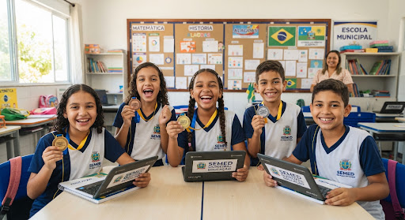

stars DestaqueRede Municipal de São Miguel dos Campos alcança resultado histórico na Maratona de Raciocínio Lógico e Avaliações Diagnósticas
Com avanço expressivo de 34% nos índices de proficiência de matemática e língua portuguesa no Ensino Fundamental, estudantes de 22 escolas municipais superam metas projetadas pelo IDEB.
Ler notícia completa arrow_forward
Notícia 1 de 3